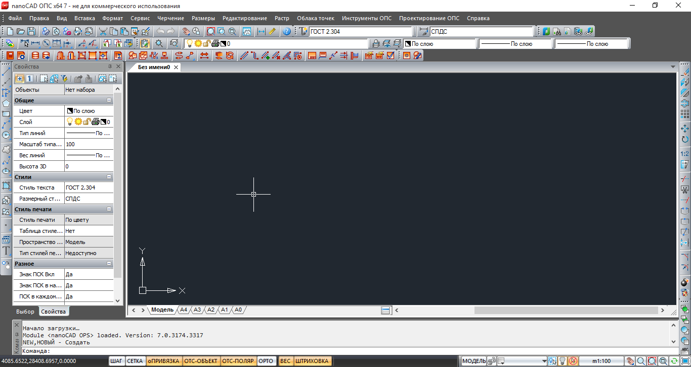
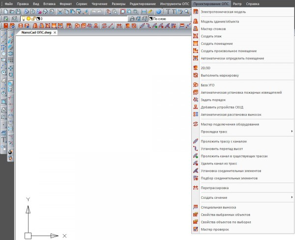
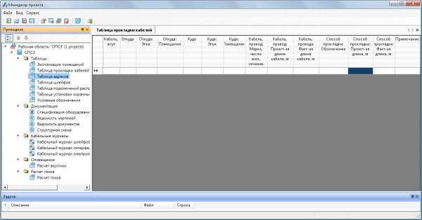
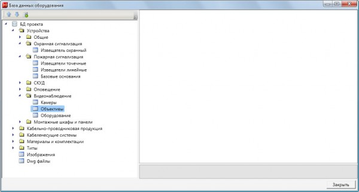

СОЗДАНИЕ МОДЕЛИ С РАССТАВЛЕННЫМ ОБОРУДОВАНИЕМ В ПОМЕЩЕНИИ С УЧЕТОМ ЭТАЖНОСТИ ПОМЕЩЕНИЯ И ДОПОЛНИТЕЛЬНЫХ ФАКТОРОВ
Цели работы:
1. Необходимо создать модель с расставленным оборудованием в поме-щении с учетом этажности помещения и дополнительных факторов;
2. Получить чертеж здания с экспликацией помещений.
Теоретические сведения:
Для создания модели с расставленным оборудованием в помещении с учетом используем NanoCAD ОПС.
Интерфейс NanoCAD последних версий максимально приближен к ин-терфейсу классических САПР: основную часть окна занимает рабочее про-странство, в котором непосредственно разрабатывается чертеж, в верхней части расположены меню и панели с навигационными инструментами, в нижней части расположена командная строка. Команды и меню соответствуют организации интерфейса AutoCAD версий 2000—2008 (рисунок1).

Рисунок 1 – Пример меню САПР NanoCAD
Инструменты для работы с чертежами
На данный момент nanoCAD позиционируется как система рабочего 2D-проектирования (черчения), содержит все необходимые инструменты базового проектирования и позволяет:
• создавать и редактировать различные 2D и 3D векторные примити-вы, одно- и многострочные тексты, размеры и другие более сложные объекты оформления чертежей, в соответствии со стандартами ЕСКД и СПДС.
• выполнять простые и сложные операции векторного редактирова-ния, такие как перемещение, поворот, разбиение, продление и т. д.
• использовать инструменты, повышающие точность редактирова-ния: шаг, сетку, привязки, объектное и полярное отслеживание.
• создавать и использовать любые виды таблиц, выполнять специфи-цирование элементов чертежа по атрибутивным данным блоков и объектов оформления;
• производить настройки рабочей среды для оформления рабочей документации по различным стандартам;
• выполнять печать готовых технических документов по заранее сформированным настройкам.
• вести полноценную работу в 3D-пространстве модели и 2D-пространстве листа, используя видовые экраны;
• просматривать, создавать и редактировать поверхностные 3D-модели, задавать пользовательскую координатную систему для редактирования и геометрической привязки к 3D-объектам;
• использовать при проектировании любую ранее выполненную тех-ническую документацию, хранящуюся в электронном виде в различных раст-ровых форматах (сканированные чертежи, фотографии) или как OLE-объекты (тексты, таблицы);
• обмениваться готовыми чертежами со сторонними организациями и смежниками, используя распространённый формат DWG;
Панель инструментов которая отличает NanoCAD ОПС от NanoCAD Free — проектирование ОПС (рисунок 2). С помощью данной панели осуществляет-ся автоматическое проектирование различных систем. Проектирование осу-ществляется как по существующему зданию, так и по вновь созданному на базе как существующего, так и добавленного в общую базу оборудования и техни-ческих правил и норм проектирования.
Менеджер проекта позволяет автоматизировать такие вещи, как например расчет длин кабельных линий, т.е. позволяет сделать кабельный журнал в ав-томатическом режиме (рисунок 3).

Рисунок 2 – Панель «Проектирование ОПС» САПР NanoCAD

Рисунок 3 – Панель «Менеджер проекта» САПР NanoCAD
База данных оборудования (рисунок 4), кабельной продукции позволяет осуществить необходимый выбор устройств и кабелей для проектирования си-стем. База данных может осуществлять подбор оборудования из сети интернет.

Рисунок 4 – Панель «База данных оборудования» САПР NanoCAD
На базе таких специализированных решений, как NanoCAD ОПС можно спроектировать и построить системы контроля и управления доступом, систе-мы пожарной и охранной сигнализации, системы видеонаблюдения и т.д. Дру-гие программные продукты серии NanoCAD позволяют осуществить разводку газо- и водоснабжения, кабельных сетей и систем
Практическая часть:
1. Изучить САПР «NanoCAD» ОПС.
2. При помощи САПР «NanoCAD» ОПС создать модели с расставленным оборудованием в помещениях.
3. Оформить выходной документ – чертеж здания с экспликацией поме-щений.
4. Оформить отчет.
Содержание отчета:
1. Титульный лист
2. Цель работы
3. Вариант задания
4. Ход работы с пояснениями
5. Чертеж плана здания с экспликацией помещений.
6. Выводы по работе
Контрольные вопросы:
1. Что такое САПР?
2. Какой технической документацией вы пользовались при размещении систем безопасности?
3. Какие преимущества и недостатки вы для себя выделили в NanoCAD ОПС?
4. Назовите основные панели интерфейса характерные только для Nano-CAD СПДС?
5. Какими основными командами вы пользовались при выполнении прак-тической работы?